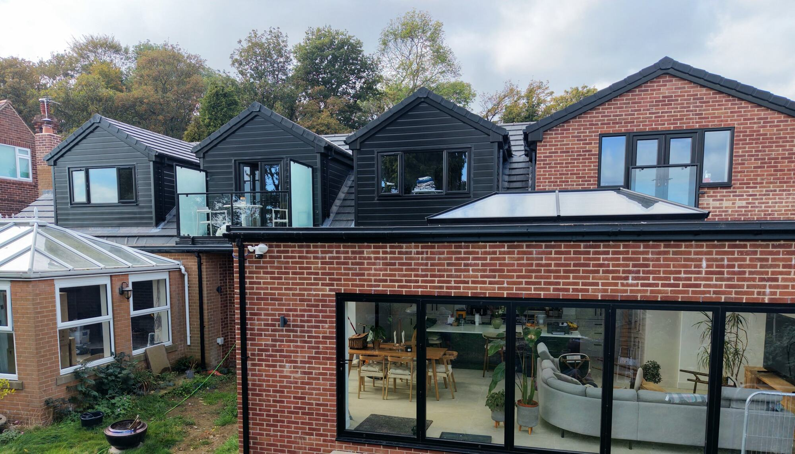

“Very happy with work that they did, great customer service always good communication, would definitely recommend this company.”
Testimonials
Once people find us, they tend to stay with us.
Recent five-star reviews from our customers on Google. Read Google Reviews
“Excellent service from start to finish. They came out at very short notice to replace a broken roof tile, and did a brilliant job. We’ve used them before and they’re always professional, reliable, and do a great job. Wouldn’t hesitate to recommend them!”
“After using Manterfields to build our extension in 2024 we knew we were in safe hands when we asked them to do work on a second property. I cannot recommend Manterfields enough, the work is outstanding and their time keeping is to be admired. Craig & Wayne are very talented with an amazing team. Building work isn’t stressful at all when you’ve Manterfields on the job! I’ve no doubts at all that I will be using them again in the near future”
“They’ve done a full reroof and ceiling repair, excellent communication throughout, taken their time to ensure the job is done to the highest standards. Highly recommend”
“Had 2 big jobs done (garage and ground floor conversion and kitchen renovation) absolutely love the outcome of both. All the teams and trades that came in were lovely. Excellent customer aftercare too. Would not use anyone else. Not the cheapest, not the dearest just a good honest middle ground. Excellent”
“Good value. Quick and professional company. Workmen polite and tidy. Work is of an exceptional standard.”
“We had Manterfield complete a kitchen knock through and remodel for us. From quote, to booking us in and completing the work, the team were amazing. Great communication, very friendly and stuck to the schedule! I was very nervous having this work completed, but I shouldn’t have been. Would highly recommend Manterfield!”
“Great company to deal with, Wayne is highly experienced and the stages were timed exactly as he explained at the beginning. The garage and porch they built looks great, I am very happy with it.”
“Had manterfield build my next extension, turn around was amazing 9 working days they took my garage roof off and built up to my new master bedroom. Cant fault any of their work and would certainly have them back for my next project. Thanks again lads.”
“We had a loft conversion carried out on our home extension, and this team handled all the structural work. From start to finish, everything was straightforward — no hassle, no cowboys, just a genuinely good group of lads who were easy to communicate with and very professional. As this was our first home project, we were pretty stressed at times, but Craig and Wayne were understanding throughout and made the whole process much easier. Overall a great experience and great quality of work would highly recommend. Thanks again!”
“We are very happy with the work carried out on our roof by the Manterfield team, initially we wanted the removal of 3 chimneys but extended that to the chimney removal and a complete new felt and tile roof and glad we did. For anyone looking for roof work doing I would definitely recommend Manterfields on the basis of how good they were on ours. Ian Sanderson Darton”
“Exceptional builders !!! Great communication from start to finish, high quality of work and attention to detail, would highly recommend to anyone looking to carry out small or large building works. Craig and Wayne are an absolute pleasure to deal with, and the whole team are professional and knowledgable in their works. 20/10 wont be using anyone else.”
“Great workmanship, easy to deal with from start to finish. 5/5”
